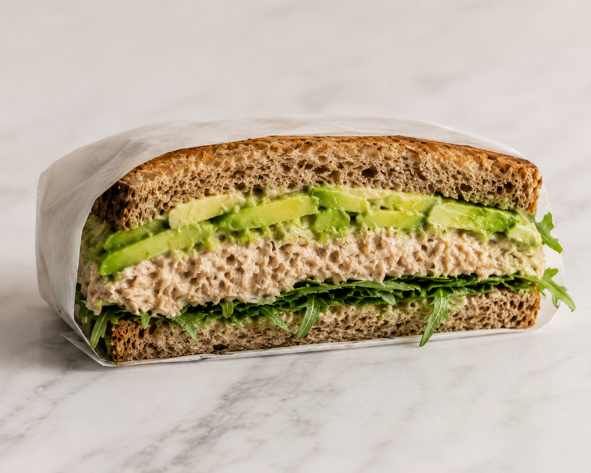

Tunacado Sandwich
Back to Homepage

Description
A delicious and nutritious sandwich made with canned tuna,
ripe avocado, and fresh vegetables. This sandwich is perfect for
a quick lunch or dinner and is packed with protein and healthy fats.
Ingredients
- Whole wheat or sourdough bread
- 2 cans tuna (drained)
- 1 ripe avocado, sliced
- 2 tablespoons mayonnaise or Greek yogurt
- 1 tablespoon lemon juice
- 1 tablespoon chopped fresh dill
- 1 tablespoon chopped chives
- 1 tablespoon Dijon mustard
- Pesto (store-bought or homemade)
- Salt and pepper to taste
- Tomato, sliced
- Spinach (optional)
- Capers (optional)
Steps
- In a bowl, combine the drained tuna, mayonnaise or Greek yogurt, lemon juice, chopped dill,
chives, Dijon mustard, salt, and pepper. Mix well until all ingredients are evenly incorporated.
- Toast the bread slices until they are golden brown and crispy.
- Spread a layer of pesto on one side of each toasted bread slice.
- On one slice of bread, layer the tuna mixture, followed by sliced avocado,
tomato slices, spinach (if using), and capers (if using).
- Top with the second slice of bread, pesto side down.
- Press down gently to help the sandwich hold together.
- Cut the sandwich in half and serve immediately. Enjoy your delicious tunacado sandwich!